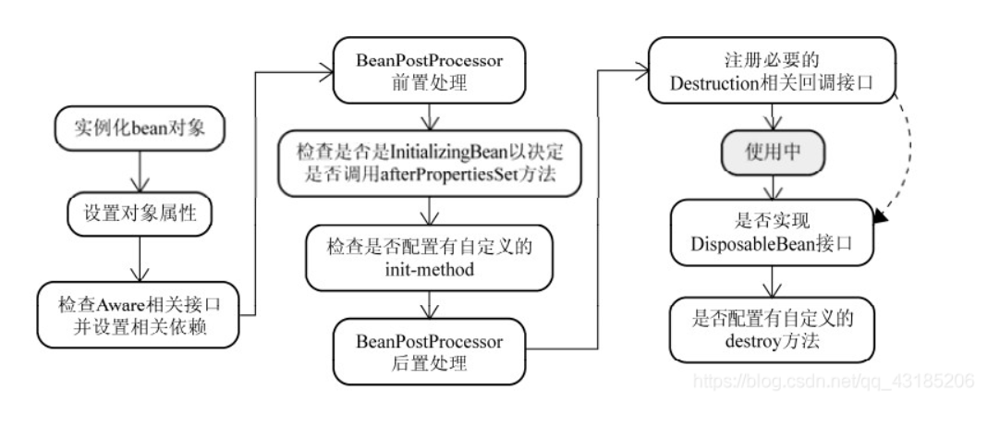

策略模式
策略模式
什么是策略模式
说一下我的理解，就不用那些冠冕堂皇的话说了，直接白话文。
策略策略，策略是用来干嘛的呢？策略是用来解决问题的，也是一类问题的解决方案。就是我们常说的。
小明：我遇到了一个问题，你有什么策略应对吗？
我：有啊。
这里就说明了什么是策略，解决问题的方案。
还有人说策略模式可以消除if else …..
其实不能。。就像上面说的策略模式只是针对某种问题提出一种应对策略。该有的if else还是有的，策略模式只是把if else里面的代码段（也就是解决这个问题所要做的事情）换为某一种策略。
那如何消除if else呢，首先要明白会有if else的原因。知道了原因就好解决嘛。之所以要有很多if else是我们不知道发生的这种问题改用哪种解决方案。所以如何解决呢，我们可以把问题跟策略通过KV的形式将其绑定起来，那么下次出问题我们只要知道问题的类型，就可以获得到相应的解决策略。
代码体现
策略接口
新建一个策略接口，以后所有的策略都要实现这个接口。这样做的好处是让各种策略的风格都保持一致吧。
1 | |
具体的策略
1 | |
其实这样也就算是好了。但是为了解决if else我们引入工厂模式
工厂
1 | |
如何注册到工厂的map里面呢？这里要了解Bean的生命周期了。细心的同学会看到我的具体的策略加了@Component注解。加了这个注解表示这是一个组件，也是Spring的一个Bean，他的生命周期由Spring来接管。那我们就可以在Bean生命周期里做手脚让他注册到Factory的map里面。
Bean的生命周期
class ——> 实例化 ——–> 对象 ——–>属性填充———>BeanPostProcessor、InitializingBean——>……..——–>Bean

BeanPostProcessor
这个也是一个很经常在工程中看到的接口实现，从字面上 BeanPostProcessor 的意思就是 Bean 的后置处理器。主要作用就是帮助我们在bean实例化之后，初始化前后做一些事情。
spring 会自动从它的所有的 bean 定义中检测 BeanPostProcessor 类型的bean 定义，然后实例化它们，再将它们应用于随后创建的每一个bean实例。
在 bean 实例的初始化方法回调之前调用 BeanPostProcessor 的postProcessBeforeInitialization 的方法（进行 bean 实例属性的填充）。
在 bean 实例的初始化方法回调之后调用 BeanPostProcessor 的postProcessAfterInitialization 的方法（可以进行 bean 实例的代理封装）。
这里有两个关键字，第一个是：随后创建的 第二个是：每一个
因为是应用于随后创建的每一个Bean，所以第一要想保证我们的策略类都可以注册进去，那么就得让他在这后面，，，其次她说满足 BeanPostProcessor 类型的bean 定义所以我们的Bean都可以注册进去。
BeanPostProcessor的作用域是容器级的，它只和所在容器有关。如果你在容器中定义了BeanPostProcessor,它仅仅对此容器中的bean进行后置。它不会对定义在另一个容器中的bean进行任何处理。
注意的一点：
BeanFactory和ApplicationContext对待bean后置处理器稍有不同。ApplicationContext会自动检测在配置文件中实现了BeanPostProcessor接口的所有bean，并把它们注册为后置处理器，然后在容器创建bean的适当时候调用它。部署一个后置处理器同部署其他的bean并没有什么区别。而使用BeanFactory实现的时候，bean 后置处理器必须通过下面类似的代码显式地去注册：
1 | |
注册器实现
1 | |
InitializingBean
和BeanPostProcessor 的区别，InitializingBean的作用域不是容器级的，只有实现了InitializingBean接口的Bean才会自动调用afterPropertitySet(),所以我们以后定义的每一个策略都要实现这个接口然后注册到map里面去，这就相对麻烦些。
1 | |
1 | |
本博客所有文章除特别声明外，均采用 CC BY-SA 4.0 协议 ，转载请注明出处！